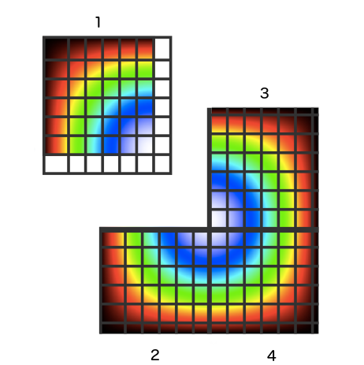
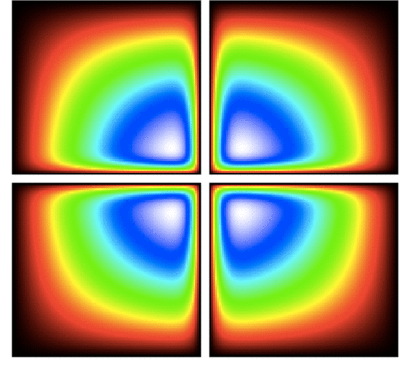

WebRTC Parallel Processing (part-2)
In my last post, I introduced a CFD code which solved a partial differences equation implemented in JavaScript. The starting point, was to use a parallel computational task and distribute it among several browsers with Webrtc. In this post, I'll show you how I accomplished just that.
I've devised a solution where I have several browsers in different computers. Each browser has a peer connection and is connected to the same URL. I'm using a master/server approach, where one peer distributes work among the other peers and judges if the convergence criteria is met.
WebRTC
WebRTC is a browser specification to enable peer-to-peer communication in the browser. It enables, data, chat and video communication among browsers, without data passing through a server. There is however, the need to have a signalling server that lets the peers know about each other.
For production applications, you'll need an additional server that relays messages when both peers can't "see each other", ie, both are behind a firewall. However, we'll simplify this step by running the experiment inside a local network.
To abstract the browser implementation of WebRTC, I'm using peer.js.
Peer.js
You can test peer.js locally with node and the package peer. We'll write a simple server code that listens and logs peer connections:
var PeerServer = require('peer').PeerServer;
var peerServer = PeerServer({port: 9000, path: '/myapp'});
peerServer.on('connection', function (id) {
console.log('Peer connected with id:', id);
});
For the client code, include the script tag in your html page:
<script src="http://cdn.peerjs.com/0.3/peer.js"></script>
Now open this html page in a browser tab and open the dev console to write:
var peer = new Peer( 'peer-id', {host: 'localhost', port: 9000, path: '/myapp'});
peer.on('connection', function(conn) {
conn.on('data', function(data){
console.log(data);
});
});
Open another tab and write:
var peer = new Peer( 'another-peer-id', {host: 'localhost', port: 9000, path: '/myapp'});
var conn = peer.connect('peer-id');
conn.on('open', function(){
conn.send('Hello from another peer');
});
You should see the words 'Hello from another peer' appear on the first tab.
Signalling server
With peer.js, browsers can communicate between each other but there's no api to exchange messages between server and peers. So how does a peer know which peers are connected to the server? One way is to setup a REST end point and return a json object with the peer list.
Additionally I want to create the notion of peer groups as a way to allow peers to pass messages only between members in the same group. The concept needs to be implemented if we want to run several experiments with the same signalling server.
The idea is to use the URL path as a prefix of the peer id. That way, it's easy to query the server for ids that start with a certain prefix. For instance, to connect the client to a group named "someexperiment" we'll do:
http://localhost:5000/someexperiment
and to list the peers connected to "someexperiment" we do
http://localhost:5000/list/someexperiment
We'll start from the basic signalling server example above and use express for the REST endpoint:
var http = require('http');
var express = require('express');
var ExpressPeerServer = require('peer').ExpressPeerServer;
var app = express();
var server = http.createServer(app);
var expressPeerServer = ExpressPeerServer(server, options);
var port = process.env.PORT || 5000;
server.listen(port, function () {
console.log('Signalling server live at', port);
});
expressPeerServer.on('connection', function (id) {
console.log('Peer connected with id:', id);
});
expressPeerServer.on('disconnect', function (id) {
console.log('Peer %s disconnected', id);
});
app.use('/myapp', expressPeerServer);
The server will have a handler to serve the client static pages in the root:
app.use('/:prefix', express.static(__dirname + '/client'));
and the peer list function looks like this.
var _ = require('underscore');
app.use('/list/:prefix', function (req, res) {
//get all peer connected to the server
var peers = expressPeerServer._clients.peerjs;
if (!peers)
return res.json([]);
var peersKeys = Object.keys(peers);
var requestPeers = [];
var prefix = req.params.prefix;
_.filter(peersKeys, function (peerId) {
var peerPrefix = getPrefix(peerId);
if (peerPrefix === prefix)
requestPeers.push(peerId);
});
res.json(requestPeers);
});
function getPrefix(id){
return id.split('-')[0];
}
In the client code, we ensure that the peer connects with an unique id with a simple strategy. We can't just generate a random string because there's a non null probability that two peers get the same id. This will happen eventually of course even if the random string is very big.
We'll use browser fingerprinting to generate a string unique to the browser and then add a random string plus a timestamp. This technique still doesn't guarantee an unique id but it greatly reduces the probability of two peers connecting with the same id, because there would have to be two peer connections, comming from the same browser, in less than a microsecond, to have duplicated ids.
For fingerprinting, we'll use the lib Fingerprint2 by Valentin Vasilyev.
new Fingerprint2().get(onFingerPrint);
function onFingerPrint(fingerprint){
peer = new Peer(createPId(window.location.pathname, fingerprint), {host: location.hostname, port: 5000, path: '/myapp'});
//Worker peer will receive something to do
peer.on('connection', function (conn) {
conn.on('data', function (data) {
console.log('Received Peer data:', data);
});
});
}
function createPId (namespace, fp) {
var prefix = namespace.split('/')[1];
//prefix validation. In this case, a valid prefix has only characters a to z
if (/^[a-z]+$/.test(prefix)) {
var id = prefix + '-' + fp + Date.now() + Math.floor( Math.random()*1000);
return id;
} else {
console.error('Prefix not supported. Only letters \'a\' to \'z\' ');
}
}
Finally, to simulate the master/server approach, I'll send a simple message from one tab to all others:
var AllPeers = function (){
var that = this;
this.update = function (cb) {
$.get('/list'+ prefix, function(peers){
//remove master Id from peer list
var i = peers.indexOf(peer.id);
peers.splice(i, 1);
that.list = peers;
cb(peers);
});
};
this.poke = function(){
//Send something to do to all peers
this.list.forEach(function(peerId){
var conn = peer.connect(peerId);
conn.on('open', function (){
conn.send('Do Something peer ' + peerId);
});
});
};
};
To test the approach, I'll write the following in a browser dev console:
var allPeers = new AllPeers();
allPeers.update(function (peers) {
console.log('You have %d peers', peers.length );
allPeers.poke();
});
And now we should have something to do in the other tabs.
You can see the whole code here.
Implementing...
Now that we have our master/server approach defined, we'll apply it to the CFD problem at hand.
The way we parallelize the problem is called Domain Paralellization. In broad strokes, this is achieved by splitting the geometry of the problem among independent processors, in this case, browser tabs. Each tab is responsible for running one instance of the poisson solver. The solver is converged until the stop criteria are met, which can be the number of iterations or the residue of the iteration being lower than a maximum value. Then, the boundaries are emitted to the neighbour tabs. For instance, the tab with section 1 will emit the east boundary to section 3, and the south boundary to section 2. The process keeps going until the global convergence is met. In our case, this happens when the global residue drops bellow a maximum allowed value.

I've put a repository on github with the code I used in this experiment. The main structure is
\
index.js
client\
block.js
client.js
index.html
master.js
poisson.js
worker.js
index.js is our signalling server. Its main function is to allow peers to connect and know about each other. The entire problem is solved in the browser and nothing goes through the server.
The client folder is the code which will run on the browsers. The client code is organized as follows:
master.js has the Master class with methods to launch the worker peers and judge convergence.
block.js has the Block class with methods to start the poisson solver and emit the boundaries to the neighbour peers. The solver has to run inside a webworker otherwise it would block the web page and crash the browser. This is the worker.js file.
poisson.js is the solver covered in the previous post.
Experiment
This section shows how you can run the experiment in your local network.
Clone the repository with:
git clone https://github.com/fjsousa/poisson-rtc.git
Then install:
npm run install-all
And run the server:
npm start
Now, open five tabs in your browser, or in browsers of computers in your local network and type:
http://localhost:8080/experiment123
Open the console in one of the tabs and paste the code:
new AllPeers().update(function(peers){
var opts = {
peerList: peers, //your peers
blockRows: 2, //number of block rows
blockCols: 2, //number of block cols
n: 50, //number of rows of each block
m: 50, //number of cols of each block
blockMaxRes: 1E-9, //inner solver stopping criteria
blockMaxItt: 60 //inner solver stopping criteria
};
masterBlock = new MasterBlock(opts);
})
When the process finishes, you'll get a download link for each block. In this case, 4. To finish, here's a nice gif animation. This is what the iterative process looks like in the first few iterations:

In the next post, I'll finish with a note on performance and speed ups.